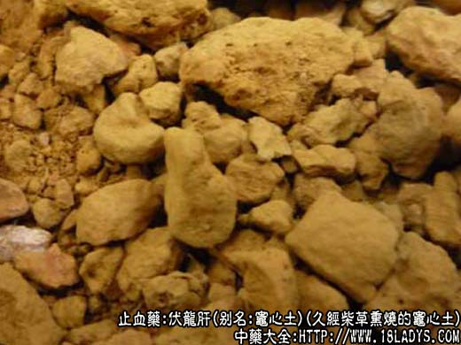

别名：灶心土。
来源：为久经柴草熏烧的灶心土。在拆修柴灶时，取灶心凝结成硬块者，除去四周烧焦部分，以中心红黄色者入药。
产地：全国各地均有生产。
性状鉴别：本品呈不规则块状，大小不一，表面红祸色。质坚硬，但较砖为松，指划易碎，并有粉末掉下。断面细腻或微有蜂窝小孔。有烟熏气，味淡，尝之有泥土感。
以块大整齐，色红褐，断面细腻，质稍软者为佳。
主要成分：含二氧化硅、氧化钙、氯化镁等。
药理作用：温中和胃而镇呕，收敛而止泻、止血。
炮制：剁成小块或轧成粉末。
性味：辛、温。
归经：入脾、胃经。
功能：温中和胃，止呕止血。
主治：呕吐恶心、吐血、衄血、尿血、便血、崩漏。
临床应用：见证虚寒的出血、呕吐、泄泻均可应用。
1、用于止血。住址虚寒性胃肠出血，有较好效果，可配肉桂、艾叶温中、熟地、当归、阿胶滋阴补血，方入黄土汤加减。此方可治疗一般慢性虚寒性出血的代表方，不仅治胃肠出血，也可治虚寒性出血、衄血、尿血、崩漏，用时可随证加减。
2、用于止呕。主治妊娠恶阻（妊娠呕吐），偏于虚寒者，以本品60g，配生姜6g，竹茹9g，陈皮6g，水煎服。
3、用于止泻。主治脾胃虚寒所致的水泻下痢，可配白术、黄芪、灸甘草等。
使用注意：热证的出血，呕吐不宜用。如无伏龙肝，可用赤石脂代。
用量：30~60g。大剂可用至90~120g。宜先煎水，沉淀后去渣，然后用黄土汤液煎其它药。
处方举例：黄土汤加减：灶心黄土45g（先煎去渣代水），熟地15g，当归9g，肉桂1.5g（焗服），艾叶3g，阿胶6g（溶化），白术9g，生姜3g，炙甘草3g，水煎服。